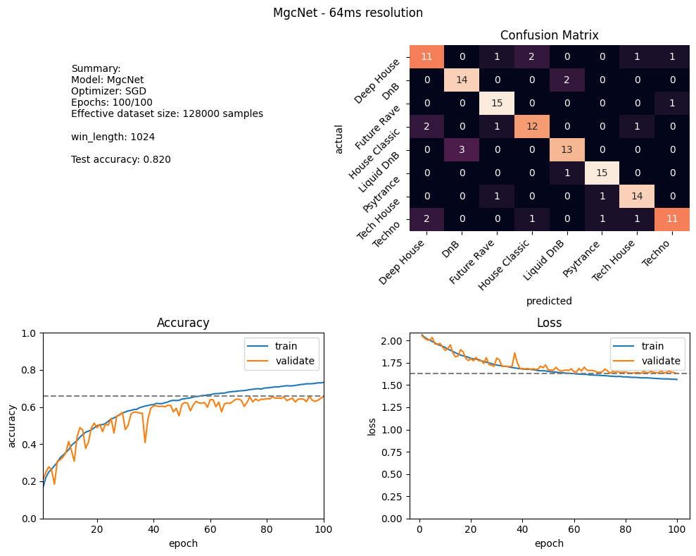

Final Report
Introduction
Labeling a song with a correct genre is an inherently difficult problem. Notably because most often there is no correct answer. Genres blend into each other, there is no clear line of separation and often multiple answers seem to fit. Especially if the genres are closely related subgenres.
Initial idea
This led to the idea of using multiple genres for describing a single song to sort of create a spectrum of where the song lies on. Then I would employ deep learning to create a model for classifying songs by a set of genres. This proved to be a lot more difficult than expected. Initially I found rateyourmusic.com, a site where users rate music and which often lists multiple genres for a song.
However one major problem with this data source was there was is API. Luckily someone wrote a scrapper for it. While getting ratelimited a lot it worked fine for about 300 songs, but when I decided to try a different approach to reduce rate limiting I got IP banned instantly.
Analysing what I had so far it was clear that this wasn't a good route anyway. Only a small fraction of songs even had genres.
Solution
The genre information by the spotify api was also not very good. The genres were too generic for my task. So I decided to get the genre data from genre-specific playlists the songs appear in. I did that by selecting 17 playlists that each contain songs of a single genre and then labeling each song by that genre.
The downloading of songs was automated by a tool I wrote that searches for and then downloads each song on YouTube.
Neural Network
Elbir, A., & Aydin, N. [1] present a network for music genre classification. They achieved an accuracy of 81.8% using a CNN and even 97.6% employing an additional SVM on a feature vector from one of the dense layers. I only use a CNN for classification.
The best model I settled on was an adaptation of the model from [1]. I added more convolutional layers to create a deeper network. And also added batch normalization which improved the performance.
Songs are converted to 16k .wav files for lower storage usage to allow me to load the entire dataset into ram. This improved the training time by multiple orders of magnitude versus loading songs on the fly from my ssd.
Dataset
A mel spectrogram is a spectrogram using a logarithmic scale on the frequency axis. This scaling more similarly approximates human hearing. Such a spectrogram is created for each song using 128 frequency bins. And a window length of 2048 samples for the fourier transform and 75% window overlap.
The dataset contains 1280 songs in 8 different genres. As an augmentation step only a subinterval of the whole song is used as an input. This is done by using a 128x128 pixel crop as the model input. With the configuration described above we such a crop contains about 4.2 seconds of a song.
In each epoch each song is sampled multiple times, effectively increasing the dataset size.
Demo
The demo app is a simple site build with html, js and picocss. The backend is built on flask mostly using existing code for processing songs and executing the model. The model is downloaded from a github release. Also a docker image is built using github actions and available at ghcr.io/georgschenzel/music-genre-classification:latest. To try it for yourself simply do:
$ docker pull ghcr.io/georgschenzel/music-genre-classification:latest
$ docker run -d -p 8000:8000 ghcr.io/georgschenzel/music-genre-classification:latest
http://127.0.0.1:8000/ in your browser.
Results
The results are better than expected. The best test accuracy achieved was 84.4%. The test accuracy is determined by sampling whole songs and getting an average of the prediction. Thus achieving a better accuracy than in training or validation as here the network only sees a few seconds of the song.

The results of the best run. In the confusion matrix you can see a good representation of the model's performance with only a few outliers. "DnB" and "Liquid DnB" were deliberately chosen as two very similar genres, mainly differing in energy but having very similar drum patterns and bpm. The model hat no problem differentiating between them. A weight decay of 0.005 and a learning rate of 0.0001 was used.
Takeaways
- SGD performed slightly better then adam
- Using a much deeper network such as ResNet18 resulted in very strong overfitting
- Data loading takes long and can bottleneck. Keeping all data in RAM fixed this. For larger datasets one could preprocess all songs into 5s segments and store them instead of loading the full song.
- Getting accurate genre information for songs is proves to be difficult
What I would do differently
I would aim to get a significantly larger dataset. Maybe about 20k songs across 20 genres would be my target. Some optimizations would be needed for such a large dataset to not bottleneck the training speed.
Additionally, I would try to sample a much larger amount of playlists, or even automate the process of searching for playlists. This way I could provide multiple genres for each song allowing me to work on my initial idea of placing songs on more of a spectrum than single genre labels.
Time Spent
| Actual | Estimate | Task |
|---|---|---|
| 35h | 30h | Dataset collection |
| 10h | - | Creating the pipeline |
| 8h | 5h | Designing and building the network |
| 10h | 10h | Training and fine-tuning |
| 18h | 10h | Building the demo |
| 81h | 55h | Total for project + demo |
References
[1] Elbir, A., & Aydin, N. (2020). Music genre classification and music recommendation by using deep learning. Electronics Letters, 56(12), 627-629.